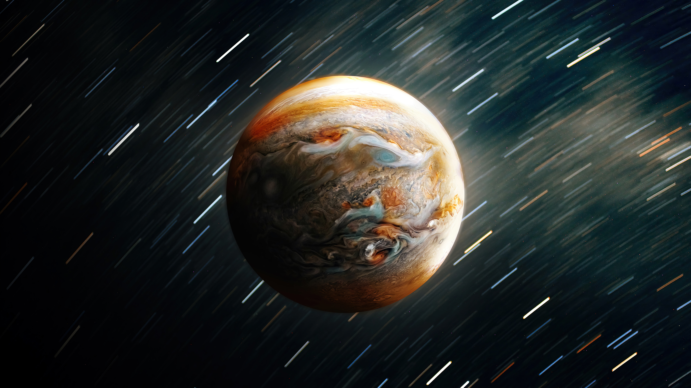
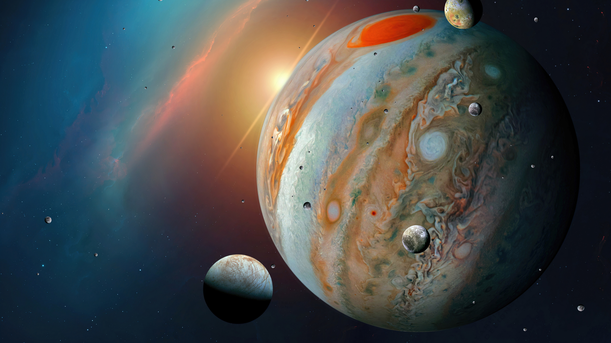

Role a tela!
Sobre Júpiter
Suas principais caracteristicas
- O maior planeta do sistema solar
- Está situado entre Marte (o planeta vermelho) e Saturno (o planeta do anel)
- Possui entre 60 e 70 satélites naturais (luas) o rodeando
- O planeta Júpiter pode ser visto ao olho nu durante a noite, sendo o segundo planeta mais brilhantes atrás apenas de Vênus
- Júpiter é feito por dois gases, sendo 86% de hidrogênio e 14% de hélio

As luas de Galileu
Júpiter tem muitos satelites naturais, mas os principais são conhecidas como as luas de Galileu, que foram vistas pelo cientista em 1609, são elas:
- IO
- Europa
- Ganímedes
- Calisto

Curiosidades de Júpiter
As principais Curiosidades:
- O planeta Júpiter também possui aneis, apesar de não serem tão grandes quanto os de Saturno
- O dia em Júpiter tem 10 horas de duração
- A lua intitulada como Europa pode ter um oceano líquido em sua superfície
- Ventos de 600km/h são comuns no planeta

Siginificado de Júpiter
O Deus Júpiter é o Deus dos Deuses!
Como na mitologia grega Zeus é o Deus dos Deuses, Júpiter é o Zeus para os romanos.